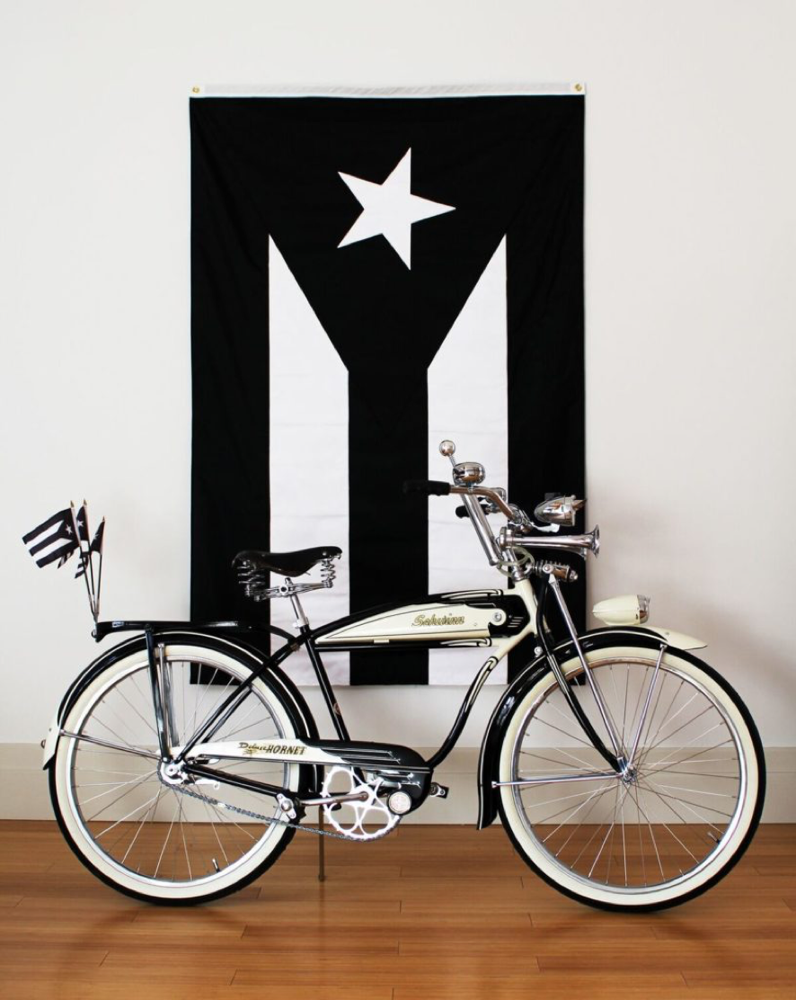
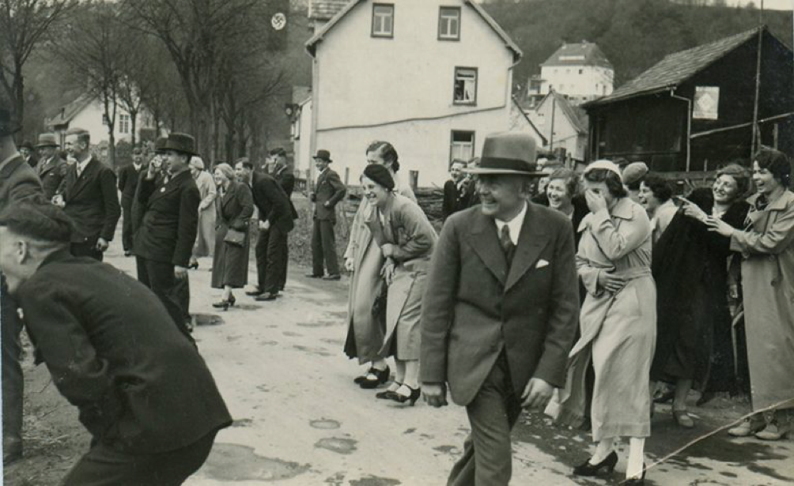
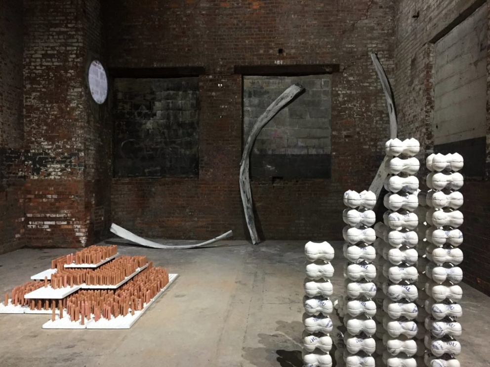

The Art Times
Your Leading Source of Art Coverage


1. Grey Gardens screening with Jerry the Marble Faun at the Metrograph
Jerry “the Marble Faun” Torre, the caretaker in the classic documentary film Grey Gardens, will be on hand to introduce the sad tale of mother and daughter Edith Bouvier and Edith Beale, former socialites reduced to a life of squalor in a dilapidated East Hamptons manor.
A gardener no longer, Torre has shown his sculpture to critical acclaim at the Outsider Art Fair in New York. The artist’s work is currently on view in the two person show “Charles Andresen and Jerry the Marble Faun” at at Geary Contemporary (185 Varick Street) through February 3.
Location: Metrograph, 7 Ludlow Street
Price: $15
Time: 7:15 p.m. and 9:30 p.m.
—Sarah Cascone
Wednesday, February 1–Sunday, March 5

2. Miguel Luciano, “Ride or Die” at BRIC
This year marks the centennial anniversary of the Jones-Shafroth act, which gave US statutory citizenship to residents of Puerto Rico. It also meant that the island became an official US territory. Since then, there’s been contentious arguments for and against independence. In his latest exhibition, Miguel Luciano works with vintage Schwinn bicycles to allude to the complex history of Puerto Ricans, and to celebrate Nuyorican bike club culture, in a state where over 1 million residents are of Puerto Rican descent.
Location: BRIC, 647 Fulton St, Brooklyn
Price: Free
Time: Opening reception 7 p.m.–9 p.m; Tuesday–Saturday, 10 a.m.–6 p.m.; Sunday, 12 p.m.–6 p.m.
—Kathleen Massara

3. “Normalizing Hatred: The Nazi Germany Snapshots of Dan Lenchner” at the City Reliquary
The banality of evil is on full display at the City Reliquary, which has tapped Dan Lenchner to present selections from his collection of over 500 images taken by various photographers in Nazi Germany. Despite the atrocities being committed by those in power, the photos show seemingly normal, happy scenes of every day life—even as thousands of Jews and other supposedly “inferior” peoples were being rounded up and sent to their death. Let these images stand as a warning to maintain vigilance as we enter the Donald Trump presidency.
The event is part of the museum’s “Beyond Patience & Fortitude” event series, created in response to the election to promote civic engagement and better appreciation of New York’s diversity.
Location: City Reliquary, 370 Metropolitan Avenue, Williamsburg, Brooklyn
Price: $10
Time: 7 p.m.
—Sarah Cascone

4. “Artist Talk: Juliette Dumas and Sara Mejia Kriendler” at the Chimney
A talk between gallerist Jennifer Houdrouge and artists Juliette Dumas and Sara Mejia Kriendler takes place at the Chimney on Thursday. The artists will discuss the philosophical ideas behind their two person exhibition “2020.” The ongoing show (through Februrary 19) at the Bushwick-based gallery addresses the pertinent topical issues of politics, economics, and the environment, based on the artists’ contrasting visions of the future and what the world will be like in three years.
Location: The Chimney, 200 Morgan Avenue, Bushwick, Brooklyn
Price: Free
Time: 7 p.m.–8:30 p.m.
—Henri Neuendorf
5. “Richard Mosse: Heat Maps” at Jack Shainman
In his new show, prize-winning Irish photographer Richard Mosse takes as his subject the favored whipping boy for present-day haranguers Donald Trump, Theresa May, and Marine Le Pen. His new project charts the refugee crisis unfolding across Europe, the Middle East and North Africa—the worst since World War II—with the aid of weapons-grade military technology: an extreme telephoto military-grade camera capable of detecting thermal radiation, or body heat, at distances of up to 20 miles. The resulting images take a page out of Hieronymus Bosch’s Garden of Earthly Delights. The devil is in the details for photographs that are immense in scale and shame-inducing in the extreme.
Location: Jack Shainman Gallery, 513 West 20th Street
Price: Free
Time: Opening reception 6 p.m.–8 p.m; Tuesday–Saturday, 10 a.m.–6.pm
—Christian Viveros-Fauné